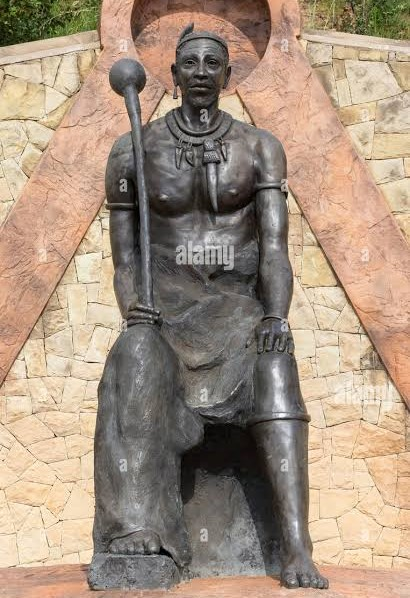
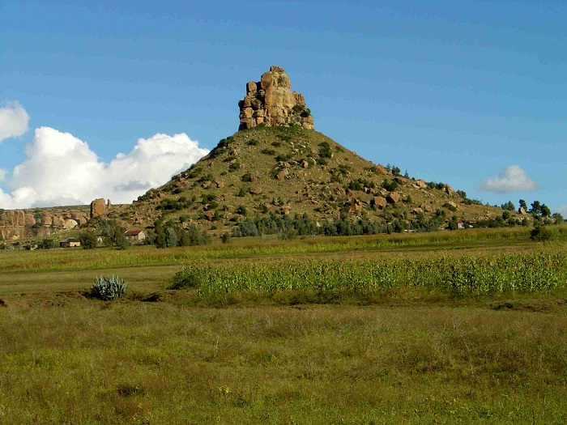
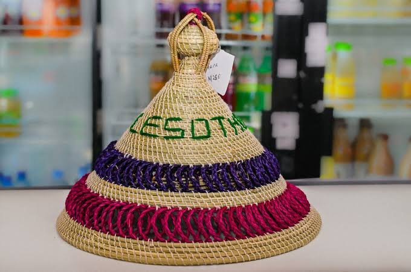
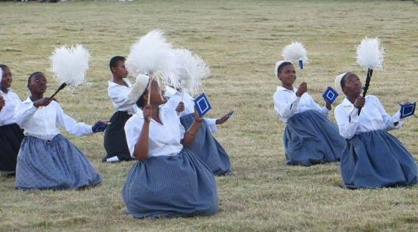

The Kingdom in the sky
Lesotho is an extraordinary landlocked nation completely surrounded by Southern Africa. It is a land of clear streams, jagged peaks and deep valleys. Known globally as the "Kingdom in the Sky," it holds the unique title of being the only independent state in the entire world that lies entirely above 1 400 meters in elevation.
Our majestic mountains don't just offer beautiful views-they define our way of life, provide fresh water to Southern Africa, and offer world-class landscapes for travelers seeking genuine high-altitude adventures.
History
The proud nation of Lesotho was founded by the legendary leader, King Moshoeshoe I. During a time of great tribal conflict across Southern Africa, he wisely gathered scattered clans together to form a peaceful nation.
He chose the flat-topped mountain fortress of Thaba-Bosiu as his stronghold. Because of his brilliant diplomacy and secure mountain terrain, the Basotho people successfully protected their freedom and preserved their deep cultural identity.


Culture and Traditions
The culture of the Basotho people is deeply rooted in respect, music, community values and storytelling. Our heritage is celebrated vibrantly through traditional dances like the Mokhibo and Mohobelo, accompanied by beautiful songs that have been passed down through generations.
Traditional clothing holds an incredibly important place in our society, especially during festivals, weddings and local holiday ceremonies. These garments are not just beautiful, they are symbols of pride, grace and national identity. They include Mokorotlo, Seshoeshoe and Seanamarena.


Fast Travel Facts
- The capital city: Maseru, located right along the northwestern border.
- Our Currency: The Basotho Loti (plural: Maloti)
- Official Languages: Sesotho and English
- Local Climate & Sports: Freezing and beautiful winters! June to August is the perfect cold season for Alpine Snow Skiing and Snowboarding in our highland resorts.